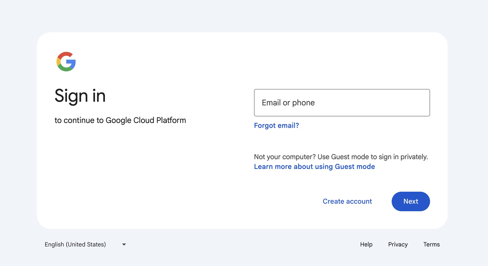

In this codelab, you'll learn how to deploy a full-stack application with a database to Google Cloud Cloud Run. Cloud Run is a fully managed platform that enables you to run your code directly on Google's scalable infrastructure. You'll use the Cloud SQL Node.js connector to connect a Node.js backend to a Cloud SQL for PostgreSQL database, and an Angular frontend to interact with the backend.
What you'll
- How to create a Cloud SQL instance
- How to connect to Cloud SQL from a Node.js application
- How to create a simple Angular frontend
- How to deploy the application to Google Cloud
What you'll need
- Laptop + Google account (free trial OK), and billing enabled
- A Google Cloud project
- A browser, such as Chrome or Firefox
- Familiarity with Node.js, Angular, and SQL
Before you begin, ensure you have a Google Account.
- If you do not already have a Google account, you must create a Google Account.
- Use a personal account instead of a work or school account. Work and school accounts may have restrictions that prevent you from enabling the APIs needed for this lab.
- Sign-in to the Google Cloud Console.
- Enable billing in the Cloud Console.
- Completing this lab should cost less than $1 USD in Cloud resources.
- You can follow the steps at the end of this lab to delete resources to avoid further charges.
- New users are eligible for the ($300 USD Free Trial).
- Create a new project or choose to reuse an existing project.
 Create a new project screen üëÜReuse an existing project üëÜ
Create a new project screen üëÜReuse an existing project üëÜ
- In your Project Welcome Screen click the Cloud Shell Icon
 to open the Cloud Shell terminal.
to open the Cloud Shell terminal.
- In the Cloud Shell screen click Open Editor
 to open the Cloud Shell Editor.
to open the Cloud Shell Editor. - In the Cloud Shell Editor IDE open a terminal.
- If the terminal doesn't appear on the bottom of the screen, open it:
- In the menu bar click View and click Terminal.

- If the terminal doesn't appear on the bottom of the screen, open it:
- In the terminal, we are going to set your project Id:
- List all your project ids with
gcloud projects list | awk '/PROJECT_ID/{print $2}' - Set your project id with
Replacegcloud config set project PROJECT_IDPROJECT_IDwith your project id. For example:gcloud config set project my-project-id - Verify your project id with
This should return your project id.gcloud config get-value project
- List all your project ids with
- If prompted to authorize, click Authorize to continue.

- You should see this message:
If you see a WARNING and are askedUpdated property [core/project].Do you want to continue (Y/N)?, then you have likely entered the project ID incorrectly. PressN, pressEnter, double check your project ID and try to run thegcloud config set projectcommand again.
You need to enable the following Google Cloud APIs:
- Cloud SQL Admin API: To manage Cloud SQL instances.
- Cloud Run API: To deploy and manage containerized applications.
- Artifact Registry API: To store and manage container images.
- Cloud Build API: To build container images and other artifacts. Run the following command in the Cloud Shell terminal to enable these APIs:
Run the following command in the Cloud Shell terminal to enable these APIs:
gcloud services enable \
sqladmin.googleapis.com \
run.googleapis.com \
artifactregistry.googleapis.com \
cloudbuild.googleapis.com
If prompted to authorize, click Authorize to continue.
This command may take a few minutes to complete, and you should see messages indicating that each service has been enabled.
Similar to this:
Operation "operations/acf.p2-73d90d00-47ee-447a-b600" finished successfully.
A service account in Google Cloud is a special type of Google account that an application or a virtual machine (VM) can use to make authorized API calls. Unlike user accounts, which represent a human user, service accounts represent an application or a service. The provided commands set up a service account with specific permissions to allow a Cloud Run application to securely connect to and interact with a Cloud SQL database.
Create and configure a Google Cloud service account to be used by Cloud Run so that it has the correct permissions to connect to Cloud SQL.
- Run the
gcloud iam service-accounts createcommand as follows to create a new service account namedquickstart-service-account:gcloud iam service-accounts create quickstart-service-account \ --display-name="Quickstart Service Account" - Assign the Cloud SQL Client role to the service account. This role allows the service account to connect to Cloud SQL instances.
gcloud projects add-iam-policy-binding ${GOOGLE_CLOUD_PROJECT} \ --member="serviceAccount:quickstart-service-account@${GOOGLE_CLOUD_PROJECT}.iam.gserviceaccount.com" \ --role="roles/cloudsql.client" - Assign the Cloud SQL Instance User role to the service account. This role allows the service account to perform operations on Cloud SQL instances.
gcloud projects add-iam-policy-binding ${GOOGLE_CLOUD_PROJECT} \ --member="serviceAccount:quickstart-service-account@${GOOGLE_CLOUD_PROJECT}.iam.gserviceaccount.com" \ --role="roles/cloudsql.instanceUser" - Assign the Log Writer role to the service account. This role allows the service account to write logs to Google Cloud's logging service.
gcloud projects add-iam-policy-binding ${GOOGLE_CLOUD_PROJECT} \ --member="serviceAccount:quickstart-service-account@${GOOGLE_CLOUD_PROJECT}.iam.gserviceaccount.com" \ --role="roles/logging.logWriter"
Why These Roles Are Needed
- Cloud SQL Client: Enables the service account to connect to Cloud SQL instances.
- Cloud SQL Instance User: Grants permissions to perform operations on Cloud SQL instances.
- Log Writer: Allows the service account to write logs, which is essential for monitoring and debugging.
These commands ensure that the service account has the necessary permissions to interact with Cloud SQL and log activities, which is essential for applications running on Cloud Run that need to access a Cloud SQL database.
Setup a PostgreSQL Database
- Create the Cloud SQL instance
- Run the following command to create a new Cloud SQL instance:
This command may take a few minutes to complete.gcloud sql instances create quickstart-instance \ --database-version=POSTGRES_14 \ --cpu=4 \ --memory=16GB \ --region=us-central1 \ --database-flags=cloudsql.iam_authentication=on- This command creates a managed PostgreSQL database instance in the
us-central1 regionwith4 CPUsand16GB of memory. - The
cloudsql.iam_authentication=onflag enables IAM-based authentication for secure access.
Creating Cloud SQL instance for POSTGRES_14...done. Created [https://sqladmin.googleapis.com/sql/v1beta4/projects/principal-fact-471601-n1/instances/quickstart-instance]. NAME: quickstart-instance DATABASE_VERSION: POSTGRES_14 LOCATION: us-central1-c TIER: db-custom-4-16384 PRIMARY_ADDRESS: 34.63.128.0 PRIVATE_ADDRESS: - STATE: RUNNABLE - This command creates a managed PostgreSQL database instance in the
- Run the following command to create a new Cloud SQL instance:
- Create a Cloud SQL database
- Run the following command to create a new database within the instance:
gcloud sql databases create quickstart-db \ --instance=quickstart-instance- This command creates a database named
quickstart-dbin thequickstart-instance.
- This command creates a database named
- Run the following command to create a new database within the instance:
- Create a PostgreSQL database user
- Run the following command to create a new user for the service account you created earlier to access the database:
gcloud sql users create quickstart-service-account@${GOOGLE_CLOUD_PROJECT}.iam \ --instance=quickstart-instance \ --type=cloud_iam_service_account
- Run the following command to create a new user for the service account you created earlier to access the database:
Create an Angular application
- Prepare an Angular application that responds to HTTP requests.To create a new Angular project named
task-app, use the command:npx --yes @angular/cli@19.2.5 new task-app \ --minimal \ --inline-template \ --inline-style \ --ssr \ --server-routing \ --defaults- The
npxcommand runs the Angular CLI without needing to install it. - Type
nwhen prompted with the following message:
This command creates a minimal Angular project with server-side rendering (SSR) and server-side routing enabled. Server-side rendering (SSR) is a technique where the server generates a fully rendered HTML page for each user request and sends it to the browser. This provides faster initial load times and better search engine optimization (SEO) compared to client-side rendering (where JavaScript builds the page in the browser). Server-side routing ensures that navigation between pages is handled on the server, improving performance and enabling deep linking.Would you like to share pseudonymous usage data about this project with the Angular Team ...
- The
- Navigate to the project directory by changing the directory to
task-app:cd task-app - Install node-postgres and the Cloud SQL Node.js connector libraries to interact with the PostgreSQL database.
npm install pg @google-cloud/cloud-sql-connector google-auth-library- The
pglibrary is used to interact with your PostgreSQL database. - The
@google-cloud/cloud-sql-connectorlibrary provides a way to connect to Cloud SQL instances securely. - The
google-auth-libraryis used for authenticating requests to Google Cloud services.
- The
- To enable TypeScript support for PostgreSQL in your Angular application, install the
@types/pgpackage as a development dependency:npm install --save-dev @types/pg - Set up the backend server. Open the
server.jsfile in the Cloud Shell Editor.TODO: add image!!!Navigate to thesrcfolder and open theserver.tsfile or open it using the following command:cloudshell edit src/server.ts - Delete the existing contents of the
server.tsfile. - Copy the following code and paste it into the opened
server.tsfile:import { AngularNodeAppEngine, createNodeRequestHandler, isMainModule, writeResponseToNodeResponse, } from '@angular/ssr/node'; import express from 'express'; import { dirname, resolve } from 'node:path'; import { fileURLToPath } from 'node:url'; import pg from 'pg'; import { AuthTypes, Connector } from '@google-cloud/cloud-sql-connector'; import { GoogleAuth } from 'google-auth-library'; const auth = new GoogleAuth(); const { Pool } = pg; type Task = { id: string; title: string; status: 'IN_PROGRESS' | 'COMPLETE'; createdAt: number; }; const projectId = await auth.getProjectId(); const connector = new Connector(); const clientOpts = await connector.getOptions({ instanceConnectionName: `${projectId}:us-central1:quickstart-instance`, authType: AuthTypes.IAM, }); const pool = new Pool({ ...clientOpts, user: `quickstart-service-account@${projectId}.iam`, database: 'quickstart_db', }); const tableCreationIfDoesNotExist = async () => { await pool.query(`CREATE TABLE IF NOT EXISTS tasks ( id SERIAL NOT NULL, created_at timestamp NOT NULL, status VARCHAR(255) NOT NULL default 'IN_PROGRESS', title VARCHAR(1024) NOT NULL, PRIMARY KEY (id) );`); } const serverDistFolder = dirname(fileURLToPath(import.meta.url)); const browserDistFolder = resolve(serverDistFolder, '../browser'); const app = express(); const angularApp = new AngularNodeAppEngine(); app.use(express.json()); app.get('/api/tasks', async (req, res) => { await tableCreationIfDoesNotExist(); const { rows } = await pool.query(`SELECT id, created_at, status, title FROM tasks ORDER BY created_at DESC LIMIT 100`); res.send(rows); }); app.post('/api/tasks', async (req, res) => { const newTaskTitle = req.body.title; if (!newTaskTitle) { res.status(400).send("Title is required"); return; } await tableCreationIfDoesNotExist(); await pool.query(`INSERT INTO tasks(created_at, status, title) VALUES(NOW(), 'IN_PROGRESS', $1)`, [newTaskTitle]); res.sendStatus(200); }); app.put('/api/tasks', async (req, res) => { const task: Task = req.body; if (!task || !task.id || !task.title || !task.status) { res.status(400).send("Invalid task data"); return; } await tableCreationIfDoesNotExist(); await pool.query( `UPDATE tasks SET status = $1, title = $2 WHERE id = $3`, [task.status, task.title, task.id] ); res.sendStatus(200); }); app.delete('/api/tasks', async (req, res) => { const task: Task = req.body; if (!task || !task.id) { res.status(400).send("Task ID is required"); return; } await tableCreationIfDoesNotExist(); await pool.query(`DELETE FROM tasks WHERE id = $1`, [task.id]); res.sendStatus(200); }); /** * Serve static files from /browser */ app.use( express.static(browserDistFolder, { maxAge: '1y', index: false, redirect: false, }), ); /** * Handle all other requests by rendering the Angular application. */ app.use('/**', (req, res, next) => { angularApp .handle(req) .then((response) => response ? writeResponseToNodeResponse(response, res) : next(), ) .catch(next); }); /** * Start the server if this module is the main entry point. * The server listens on the port defined by the `PORT` environment variable, or defaults to 4000. */ if (isMainModule(import.meta.url)) { const port = process.env['PORT'] || 4000; app.listen(port, () => { console.log(`Node Express server listening on http://localhost:${port}`); }); } /** * Request handler used by the Angular CLI (for dev-server and during build) or Firebase Cloud Functions. */ export const reqHandler = createNodeRequestHandler(app);- The file sets up the Express server to handle API requests and to connect to the PostgreSQL database.
- The
tableCreationIfDoesNotExistfunction ensures that the tasks table is created if it doesn't already exist.
- Save the file.
- Navigate to the
srcfolder and open theapp.component.tsfile or open it using the following command:cloudshell edit src/app.component.ts - Delete the existing contents of the
app.component.tsfile. - Add the following code to the
app.component.tsfile:import { afterNextRender, Component, signal } from '@angular/core'; import { FormsModule } from '@angular/forms'; type Task = { id: string; title: string; status: 'IN_PROGRESS' | 'COMPLETE'; createdAt: number; }; @Component({ selector: 'app-root', standalone: true, imports: [FormsModule], template: ` <section> <input type="text" placeholder="New Task Title" [(ngModel)]="newTaskTitle" class="text-black border-2 p-2 m-2 rounded" /> <button (click)="addTask()">Add new task</button> <table> <tbody> @for (task of tasks(); track task) { @let isComplete = task.status === 'COMPLETE'; <tr> <td> <input (click)="updateTask(task, { status: isComplete ? 'IN_PROGRESS' : 'COMPLETE' })" type="checkbox" [checked]="isComplete" /> </td> <td>{{ task.title }}</td> <td>{{ task.status }}</td> <td> <button (click)="deleteTask(task)">Delete</button> </td> </tr> } </tbody> </table> </section> `, styles: '', }) export class AppComponent { newTaskTitle = ''; tasks = signal<Task[]>([]); constructor() { afterNextRender({ earlyRead: () => this.getTasks() }); } async getTasks() { const response = await fetch(`/api/tasks`); const tasks = await response.json(); this.tasks.set(tasks); } async addTask() { await fetch(`/api/tasks`, { method: 'POST', headers: { 'Content-Type': 'application/json' }, body: JSON.stringify({ title: this.newTaskTitle, status: 'IN_PROGRESS', createdAt: Date.now(), }), }); this.newTaskTitle = ''; await this.getTasks(); } async updateTask(task: Task, newTaskValues: Partial<Task>) { await fetch(`/api/tasks`, { method: 'PUT', headers: { 'Content-Type': 'application/json' }, body: JSON.stringify({ ...task, ...newTaskValues }), }); await this.getTasks(); } async deleteTask(task: any) { await fetch('/api/tasks', { method: 'DELETE', headers: { 'Content-Type': 'application/json' }, body: JSON.stringify(task), }); await this.getTasks(); } } - Save the file.
The application is now ready to be deployed.
- Run the command below to deploy your application to Cloud Run.
Cloud Run uses Cloud Native Buildpacks to build a Docker image from your source code. This process requires no Dockerfile and sets permissions via the service account, allowing unauthenticated access.gcloud run deploy to-do-tracker \ --region=us-central1 \ --source=. \ --service-account="quickstart-service-account@${GOOGLE_CLOUD_PROJECT}.iam.gserviceaccount.com" \ --allow-unauthenticated--region=us-central1: Specifies the region where the service will be deployed.--source=.: Deploys the application from the current directory.--service-account: Specifies the service account to use for the deployment. Use thequickstart-service-accountcreated earlier.--allow-unauthenticated: Allows public access to the application.
- If prompted, type
yandEnterto confirm that you would like to continue:
After a few minutes, the application should provide a URL for you to visit.Do you want to continue (Y/n)? Y
Navigate to the URL to see your application in action. Every time you visit the URL or refresh the page, you will see the task app.
Test the application
Use the application to add, update, and delete tasks. Verify that the backend and database are working as expected.
You can use tools like Postman or curl to test the API endpoints directly.
You have successfully deployed a full-stack Angular application to Google Cloud Run with a Cloud SQL backend. This application allows you to manage tasks and will scale automatically based on demand.
In this lab, you have learned how to do the following:
- Create a Cloud SQL for PostgreSQL instance
- Deploy an application to Cloud Run that connects to your Cloud SQL database
- Set up an Angular frontend that interacts with the backend API
Cleanup Instructions
Cloud SQL does not have a free tier and will charge you if you continue to use it. To avoid incurring unnecessary costs, delete the Cloud project after completing the codelab.
While Cloud Run does not charge when the service is not in use, you might still be charged for storing the container image in Artifact Registry. Deleting your Cloud project stops billing for all the resources used within that project.
Delete the Cloud Project
To delete the entire project and stop all billing:
gcloud projects delete ${GOOGLE_CLOUD_PROJECT}
Optional: Delete Specific Resources
If you prefer not to delete the entire project, you can delete individual resources:
- Delete the Cloud SQL instance:
gcloud sql instances delete quickstart-instance --quiet - Delete the Cloud Run service:
gcloud run services delete to-do-tracker --region=us-central1 --quiet - Delete the codelab project directory:
rm -rf ~/task-app - Warning! This next action is can't be undone! If you would like to delete everything on your Cloud Shell to free up space, you can delete your whole home directory. Be careful that everything you want to keep is saved somewhere else.
sudo rm -rf $HOME
Resources üìö
- Google Cloud Run Documentation
- Google Cloud SQL Documentation
- Angular Documentation
- Google Cloud Shell - How-to Guides
Thank you üôè
I hope you found this codelab helpful in understanding how to deploy a full-stack Angular application to Google Cloud Run with a Cloud SQL backend.
Feedback
I value your feedback! If you have any suggestions or encounter issues, please let us know by submitting feedback at GitHub Issues.